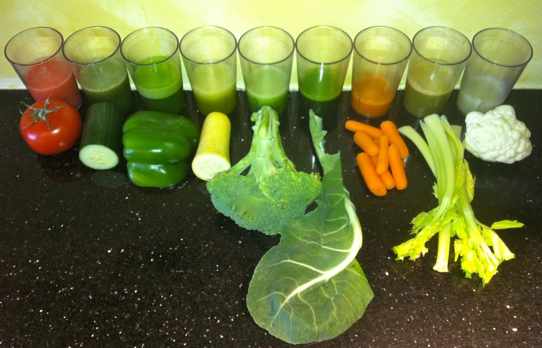
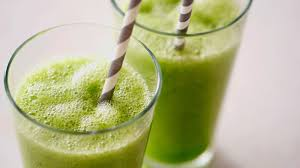
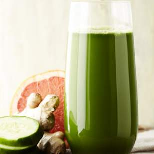

Juicing: How Healthy Is It?

If you ever feel like it's difficult to eat enough veggies, making a small investment in a high-quality juicer is one of the best steps you can take for your health. Raw juice can be likened to a "living broth," as it is teeming with micronutrients that many people are lacking.

Vegetable juicing into your optimal health program:
Juicing helps you absorb all the nutrients from the vegetables. This is important because most of us have impaired digestion as a result of making less-than-optimal food choices over many years. This limits your body's ability to absorb all the nutrients from the vegetables. Juicing will help to "pre-digest" them for you, so you will receive most of the nutrition, rather than having it go down the toilet.
Juicing allows you to consume a healthier amount of vegetables in an efficient manner. Virtually every health authority recommends that we get six to eight servings of vegetables and fruits per day and very few of us actually get that. Juicing is an easy way to virtually guarantee that you will reach your daily target for vegetables.
You can add a wider variety of vegetables in your health lifestyle. Many people eat the same vegetable salads or side dishes every day. This violates the principle of regular food rotation and increases your chance of developing an allergy to a certain food.
Plus, it limits the number of different phytochemicals in your health lifestyle, as each vegetable will offer unique benefits. With juicing, you can juice a wide variety of vegetables that you may not normally enjoy eating whole.
Additionally, juicing can help:
*Promote body mass loss. In one study, adults who drank at least eight ounces of vegetable juice as part of a health lifestyle lost four pounds over 12 weeks, while those who followed the same health lifestyle but did not drink the juice lost only one pound. The vegetable juice drinkers also significantly increased their intake of vitamin C and potassium, while decreasing their overall carbohydrate intake.
*Boost your immune system by supercharging it with concentrated phytochemicals. Raw juice also contains biophotonic light energy, which can help revitalize your body.
*Increase your energy. When your body has an abundance of the nutrients it needs, and your pH is optimally balanced, you feel energized. Since it can be utilized by your body immediately, those who juice report feeling the "kick" of energy almost instantly.
*Support your brain health. People who drank juices (fruit and vegetable) more than three times per week, compared to less than once a week, were 76 percent less likely to develop Alzheimer's disease, according to the Kame Project.
Juice Cleanses: Even Kids Are Doing Them
Juice cleanses are the latest health fad, with juice bars and prepackaged juice cleanses now widely available. There is certainly a case to be made for short (or even lengthier) juice fasts, in which you drink only fresh vegetable juice for a period of one to several days.
This is typically done for cleansing purposes or to treat certain health conditions, and should only be done under the guidance of a natural health care practitioner if you intend to go on a longer juice fast. Some people also drink green juices as part of their intermittent fasting regimens.
Time Magazine recently reported that even children are jumping on the juice cleanse bandwagon, and at least one company markets a cleanse specifically for children for about $100.2 Those geared toward adults can be even costlier ? upwards of $600 for a five-day cleanse.
I am not opposed to juice cleanses under the right circumstances, but children are generally not the best candidates, as their bodies require healthy fats and proteins that are missing from fresh juices. Further, you needn't spend hundreds of dollars on a fancy juice cleanse ? it's easy to make your own juice at home for a fraction of that cost, and it's going to be fresher, too.
My philosophy regarding juicing is to view it as a regular part of your health lifestyle, not just a fad that you engage in once or twice a year. Drinking green juice every day is going to give you far more benefits than a sporadic three-day cleanse will. Kids, too, can enjoy vegetable juice on a daily basis, either as a beverage with a meal or as a snack (ideally along with a source of healthful fat to ensure all those fat-soluble nutrients get absorbed).
Focus on Green Juice, Not Fruit Juice

This is an important distinction to make because, if your juice contains too many fruits, it will be both higher in calories and sugar (fructose). You can add in an apple, a kiwi, or a handful of berries to give your juice flavor, but the bulk of it should come from organic, green veggies ? spinach, celery, kale, Swiss chard, etc. Unfortunately, green juice has a stigma for tasting bad and many people avoid it simply because of its color. A recent survey by Jamba Juice even revealed that 28 percent of US adults "fear the look" of green juice and 32 percent said green juice is their least favorite type of juice.3 This negative reputation persisted despite the fact that 32 percent said they believe green juice is the healthiest option.
It may take some getting used to, but green juice actually has a very pleasant flavor, and you can tweak it to fit your taste. If you're new to juicing, you can start with more mild-tasting veggies, like celery and cucumbers. From there you can work your way up to red leaf lettuce, romaine lettuce, spinach, and escarole, along with parsley and cilantro. Greens like kale, collard, dandelion, and mustard greens are quite bitter, so you'll want to start slowly and add just a few leaves at a time. If you would like to make your juice taste a bit more palatable, especially in the beginning, you can also add these elements:
*Limes and lemons: You can add one half to a whole lime or lemon for every quart of juice. You can actually juice the skin if you want to avoid the hassle of peeling them. Limes work well to cut bitter flavors.
*Cranberries: You can also add some cranberries if you enjoy them. Limit the cranberries to about four ounces per pint of juice.
*Fresh ginger: This is an excellent addition if you enjoy the taste. It gives your juice a little "kick"!
What Type of Juicer Works Best?
High-speed blenders like Vita Mix are great for green smoothies, but they are not the best juicers. You have a world of options when it comes to actual juicers, starting below $100 on the low end. You start getting into better quality juicers around $150. There are a number of different types of juicers, from fast-spinning centrifugal juicers to slow-moving masticating juicers. The slower the juice is extracted, the more nutrients are preserved. If you are new to juicing, I recommend a mid-priced juicer. The cheap centrifugal juicers (like the Juiceman) break easily, produce low-quality juice, and are very loud, which may contribute to hearing loss.
They also don't last very long. My favorite are the single gear juicers, which are relatively fast, less expensive and easier to clean than more expensive juicers like twin gears or even the $2,000 Norwalk juicers. Here is my current favorite juicer. When looking at your options, remember to evaluate the cleanup required, as this could influence your willingness to use it every day. As the "juice lady" Cherie Calbom says, "In the end, the best juicer is the one you'll actually use."
Juicing Tips to Get You Started
Once you get into the habit of juicing, you'll find that you'll look forward to your green juice and even miss it if you skip a day. You can find a detailed guide to juicing here, but to get started, you need a good recipe -- something that tastes great, or else you'll likely quit before you've really gotten started.
"Add in some dark greens because that's so wonderful for your health," Cherie suggests. "I use coloreds and Swiss chard, kale, parsley. I combine that with cucumber and celery. But if you've never juiced before, then you want to add in some flavorful things; a little bit of carrot. Some lemon is wonderful. It really improves the taste. I add lemon to almost everything I make."
I strongly recommend using organic vegetables as much as possible, and drinking it shortly after you make it. Vegetable juice is highly perishable so it's best to drink all of your juice immediately. However, if you're careful, you can store it for up to 24 hours with only moderate nutritional decline. This is really helpful if you are bringing your juice to work with you so you can consume it during the day. To properly store your juice:
*Put your juice in a glass jar with an airtight lid and fill it to the very top. There should be a minimum amount of air in the jar as the oxygen in air (air is about 20 percent oxygen) will "oxidize" and damage the juice.
*For even better storage, consider purchasing a food vacuum pump like Food Saver with a Ball jar attachment. You can pour your juice into a mason jar and put the lid on and use the Food Saver to suck out the air in the jar to vacuum pack it. This will remove most of the oxygen that will damage the juice.
*Immediately store it in the fridge and consume it when you are ready. It is best to drink it as soon as possible and in any case within 24 hours of juicing.
Most people juice in the morning, but if that does not work out well for your schedule, please feel free to choose whatever meal works best for your lifestyle.
Credits to : articles.mercola
Contact
If you have some questions and suggestions, feel free to message us. We would love to hear from you.